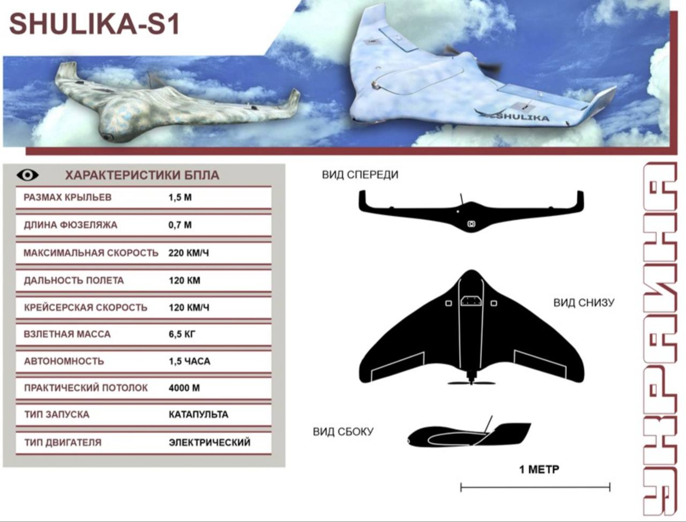

TechUAV Wiki
Эта страница не содержит исполняемого кода.
ВАЛЬКИРИЯ
БУМЕРАНГ
СКИФ
WIMAN 2
SKIPPER
SIIRKO
SHULIKA-S1
R-15
PATRIOT RV 010
Quantix Recon
GRAY WIDOW
GHOST HUNTER
ГЕНДАЛЬФ
FURY
ДОМАХА
ELF-K
Grey Widow
Список сформирован из темы
Классификатор бпла всу
Источник темы
ТЭЧ БпЛА | FPV
82 SHULIKA-S1
Из темы
Классификатор бпла всу
Из источника
ТЭЧ БпЛА | FPV
SHULIKA-S1
SHULIKA-S1 РАЗВЕДЫВАТЕЛЬНЫЙ SHULIKA-K1 УДАРНЫЙ

ШУКАЧ РАЗВЕДЫВАТЕЛЬНЫЙ